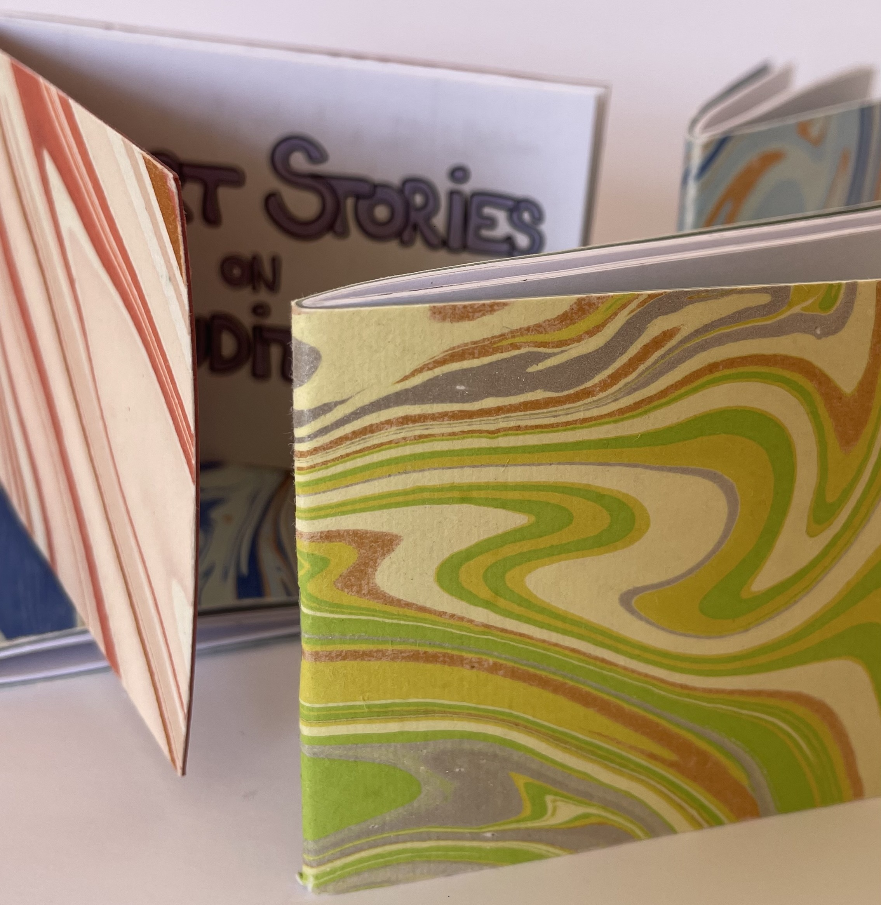

Some of the many booklet
This handmade illustrated booklet was created to accompany my PhD defense, specifically designed for non-expert audience members.
The booklet explains the main concepts in an accessible and visually engaging way.